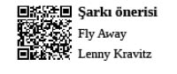

Business Class Profesyonelleri
Business Class kabinlerinin sıcak
atmosferlerinin soğuk profesyonelleri
Hikâye, profesyonel insanın Executive Administrative Assistant’ına, “İş seyahati için şuraya gideceğim” söylemi ile başlar.
Talebin içerisinde bilet tercihine dair herhangi bir ibare yer almamasına rağmen herkes bilir ki, profesyonel dediğin Business Class’ta uçar...
Biletler yazdırılmış bir şekilde şık bir zarfta masaya gelirken vize hususu gündeme dahi gelmez. Pasaportunda hemen hemen her ülkeye ait hatırı sayılı sürede vize barındırmak profesyonel insanın olmazsa olmazlarından biridir. Satır aralarında yakalanması gereken en önemli mesajlardan biri tam da burada dikkati çekmektedir, profesyonel insan bir dünya vatandaşıdır. İlgili ülkeden, kendisinin kartvizitine istinaden, tarihin bir kesitini kapsayacak vize uzun zaman önce tedarik edilmiştir zaten.